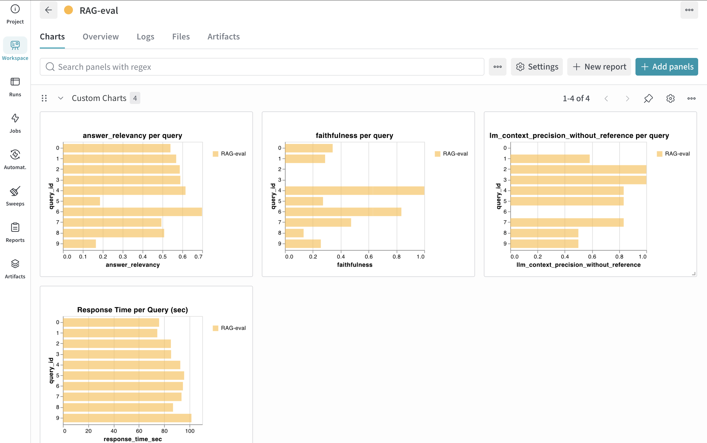
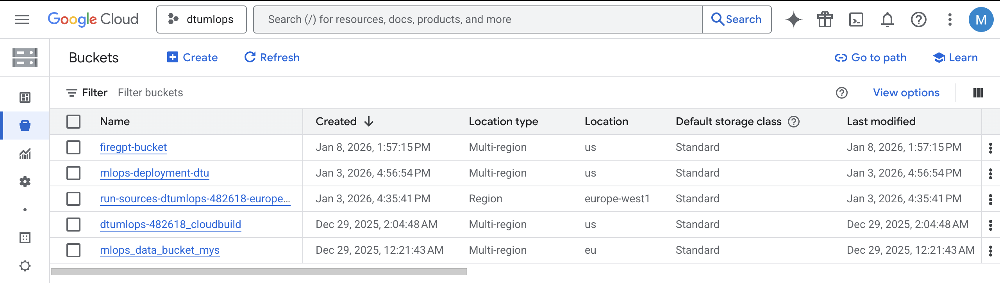
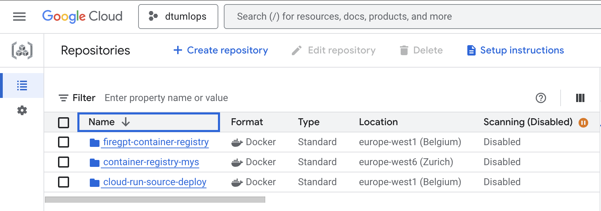
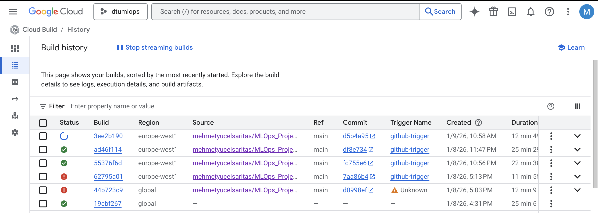
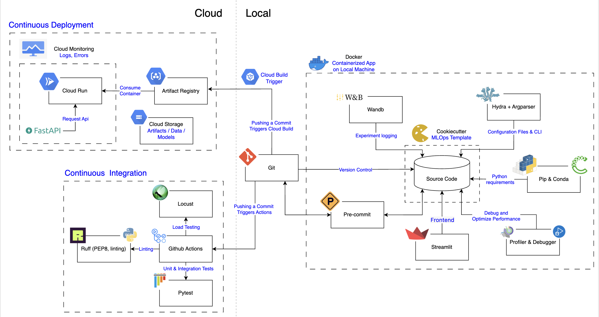

Operations
This is the report template for the exam. Please only remove the text formatted as with three dashes in front and behind like:
--- question 1 fill here ---
Where you instead should add your answers. Any other changes may have unwanted consequences when your report is
auto-generated at the end of the course. For questions where you are asked to include images, start by adding the image
to the figures subfolder (please only use .png, .jpg or .jpeg) and then add the following code in your answer:

In addition to this markdown file, we also provide the report.py script that provides two utility functions:
Running:
bash
python report.py html
Will generate a .html page of your report. After the deadline for answering this template, we will auto-scrape
everything in this reports folder and then use this utility to generate a .html page that will be your serve
as your final hand-in.
Running
bash
python report.py check
Will check your answers in this template against the constraints listed for each question e.g. is your answer too short, too long, or have you included an image when asked. For both functions to work you mustn't rename anything. The script has two dependencies that can be installed with
bash
pip install typer markdown
or
bash
uv add typer markdown
The checklist is exhaustive which means that it includes everything that you could do on the project included in the curriculum in this course. Therefore, we do not expect at all that you have checked all boxes at the end of the project. The parenthesis at the end indicates what module the bullet point is related to. Please be honest in your answers, we will check the repositories and the code to verify your answers.
data.py file such that it downloads whatever data you need and preprocesses it (if necessary) (M6)model.py and a training procedure to train.py and get that running (M6)requirements.txt and requirements_dev.txt file with whatever dependencies that you
are using (M2+M6)pep8) while doing the project (M7)Enter the group number you signed up on
Answer:
58
Enter the study number for each member in the group
Example:
sXXXXXX, sXXXXXX, sXXXXXX
Answer:
s256629
A requirement to the project is that you include a third-party package not covered in the course. What framework did you choose to work with and did it help you complete the project?
Recommended answer length: 100-200 words.
Example: We used the third-party framework ... in our project. We used functionality ... and functionality ... from the package to do ... and ... in our project.
Answer:
Due to significant hardware constraints I opted not to fine-tune a model. Instead, I focused on evaluating the performance of my RAG (Retrieval-Augmented Generation) pipeline using an "LLM-as-a-judge" approach.
I chose to work with the FAISS (Facebook AI Similarity Search) library to implement the vector retrieval component of the project. FAISS played a critical role in building the Retrieval-Augmented Generation (RAG) pipeline by enabling efficient storage and similarity search over high-dimensional text embeddings.
The FAISS library was used in two main stages of the system:
Indexing: In embedding.py, I used the IndexFlatL2 class to construct a flat L2-distance index. The add method was then used to store the vector embeddings of the generated text chunks in the index.
Retrieval: In retrieve.py, I employed the read_index function to load the stored FAISS index from disk and used the search method to retrieve the top-k most similar text chunks for a given query embedding.
Integrating FAISS enabled efficient and accurate retrieval of relevant contextual information—such as wildfire response protocols—from the dataset. This retrieved context was subsequently passed to the PromptBuilder, allowing the language model to generate more accurate and context-aware action plans.
In the following section we are interested in learning more about you local development environment. This includes how you managed dependencies, the structure of your code and how you managed code quality.
Explain how you managed dependencies in your project? Explain the process a new team member would have to go through to get an exact copy of your environment.
Recommended answer length: 100-200 words
Example: We used ... for managing our dependencies. The list of dependencies was auto-generated using ... . To get a complete copy of our development environment, one would have to run the following commands
Answer:
To ensure robust dependency management and proper environment isolation, this project uses Miniconda, pipreqs, Docker, and Git.
A dedicated Conda environment was created to avoid conflicts with other projects that may rely on different package versions. Dependency files were generated as follows:
- requirements.txt was created by explicitly recording the versions of all used Python packages.
- environment.yml was generated using a Conda environment export.
To guarantee a fully reproducible development environment, the project was containerized using Docker.
New team members can clone the GitHub repository and run the following commands to build and start the Docker container:
docker build -f dockerfiles/firegpt.dockerfile . -t firegpt:latest ; docker run -p 8080:8080 -e PORT=8080 -it firegpt
We expect that you initialized your project using the cookiecutter template. Explain the overall structure of your code. What did you fill out? Did you deviate from the template in some way?
Recommended answer length: 100-200 words
Example: From the cookiecutter template we have filled out the ... , ... and ... folder. We have removed the ... folder because we did not use any ... in our project. We have added an ... folder that contains ... for running our experiments.
Answer:
This project was initialized using Cookiecutter, which provided a standardized and well-organized starting template.
config/
Contains configuration files for the project, such as framework and environment settings.
data/
Stores all project-related data in my case pdf files that is used in RAG pipeline.
models/
Contains the imported model used in the project.
reports/
Contains exam report and assets related to the report.
outputs/
Stores generated outputs such as performance metrics and analysis results.
src/
Contains the project’s source code, including the model scripts located at mlops_project/models/*.
tests/
Includes all test cases and testing scripts, organized into subdirectories.
Compared to the original Cookiecutter template:
- The LICENSE, notebooks, and references directories were removed as they were not relevant to this project.
- A dedicated outputs/ directory was added to improve output tracking.
Did you implement any rules for code quality and format? What about typing and documentation? Additionally, explain with your own words why these concepts matters in larger projects.
Recommended answer length: 100-200 words.
Example: We used ... for linting and ... for formatting. We also used ... for typing and ... for documentation. These concepts are important in larger projects because ... . For example, typing ...
Answer:
To ensure a maintainable and robust codebase, I adhered to strict development guidelines throughout the project.
query: str in retrieve.py).Retrieve class and Embedding class are self-explanatory and easy to integrate.In larger projects, these practices are crucial for scalability and collaboration:
1. Maintainability: Automated linting and formatting prevent "style wars" during code reviews.
2. Bug Prevention: Strict type hinting catches data mismatches early in the development cycle before they cause runtime errors.
3. Onboarding: Comprehensive documentation allows new contributors to understand the system architecture—such as how the PromptBuilder constructs inputs—without needing to reverse-engineer the source code.
In the following section we are interested in how version control was used in your project during development to corporate and increase the quality of your code.
How many tests did you implement and what are they testing in your code?
Recommended answer length: 50-100 words.
Example: In total we have implemented X tests. Primarily we are testing ... and ... as these the most critical parts of our application but also ... .
Answer:
In total, I implemented around 16 tests covering unit, integration behavior and load testing. The tests primarily focus on the most critical parts of the application, including text preprocessing and chunking (removal of invisible characters, sentence splitting, and metadata generation), embedding creation and FAISS index construction, and similarity-based retrieval. In addition, data ingestion utilities such as PDF text extraction, broken-word fixing, file saving, and metadata building are tested. External dependencies (NLTK, SentenceTransformer, FAISS, and pdfplumber) are mocked to ensure fast, deterministic, and isolated tests.
What is the total code coverage (in percentage) of your code? If your code had a code coverage of 100% (or close to), would you still trust it to be error free? Explain you reasoning.
Recommended answer length: 100-200 words.
Example: The total code coverage of code is X%, which includes all our source code. We are far from 100% coverage of our ** code and even if we were then...*
Answer:
Total coverage is 92%. No, achieving 100% code coverage does not guarantee that the code is free of errors. Code coverage only indicates the proportion of code executed during tests, but it does not reflect the quality of the tests or verify that the logic is correct. Even if every line is executed, bugs or logical errors may still exist. Furthermore, code coverage does not capture edge cases or unexpected inputs that could cause failures. Therefore, thorough testing and code reviews remain essential for ensuring code quality and reliability. In our project, we have 100% code coverage for the embedding model (embedding.py) and the retrieve (retrieve.py).
Did you workflow include using branches and pull requests? If yes, explain how. If not, explain how branches and pull request can help improve version control.
Recommended answer length: 100-200 words.
Example: We made use of both branches and PRs in our project. In our group, each member had an branch that they worked on in addition to the main branch. To merge code we ...
Answer:
I used both feature branches and pull requests throughout the project. However, since I developed this project by myself ı used branches and pull requests less than I would use in my team projects. In theory, every new feature or modification is developed in its own branch. Each branch would focuse on a specific task: one branch would set up a dedicated project environment to manage dependencies, complete the requirements.txt, enforce code formatting, configure version control, define a configuration file for experiments, and create a GCP Bucket for data storage integrated with data version control system. Another branch would integrate log key metrics and artifacts. A separate branch would dedicate to writing unit tests for the data pipeline, model construction as well as measuring test coverage. Finally, an additional branch would implemente a API service for model inference and added a workflow. However, I did them on main branch mostly.
Did you use DVC for managing data in your project? If yes, then how did it improve your project to have version control of your data. If no, explain a case where it would be beneficial to have version control of your data.
Recommended answer length: 100-200 words.
Example: We did make use of DVC in the following way: ... . In the end it helped us in ... for controlling ... part of our pipeline
Answer:
I initialized DVC in my repository to prepare the project. During development, however, the datasets I used were relatively small and well below GitHub’s file size limits, so I kept the data directly inside the GitHub repository instead of storing it in a separate DVC remote. This approach simplified development and collaboration while avoiding unnecessary infrastructure overhead in the early stages.
Even though I did not fully rely on DVC for managing large datasets, having DVC initialized was still beneficial. It allowed me to design the pipeline with data versioning and experiment reproducibility in mind and ensured that the project could easily scale if the data size increased. In a more realistic production or research scenario, DVC would be particularly useful when datasets are large, frequently updated, or shared across multiple experiments. Using DVC in such cases helps track which exact data version was used for each model, reproduce results reliably, and prevent inconsistencies between data, code, and model outputs.
Discuss you continuous integration setup. What kind of continuous integration are you running (unittesting, linting, etc.)? Do you test multiple operating systems, Python version etc. Do you make use of caching? Feel free to insert a link to one of your GitHub actions workflow.
Recommended answer length: 200-300 words.
Example: We have organized our continuous integration into 3 separate files: one for doing ..., one for running ... testing and one for running ... . In particular for our ..., we used ... .An example of a triggered workflow can be seen here:
Answer:
I organized my continuous integration (CI) setup into three separate GitHub Actions workflows, each responsible for a different aspect of code quality and reliability: one for code formatting and linting, one for unit testing and other for pre-committing..
The first workflow focuses on code formatting and static analysis. It is triggered on every push and pull request to the main branch. In this pipeline, I use Ruff as both a linter and formatter to ensure a consistent coding style and to catch common issues early in the development process. The workflow runs on ubuntu-latest and sets up Python 3.11 using actions/setup-python. To improve execution speed, I enable pip caching, specifying the dependency path. This reduces dependency installation time on subsequent runs and keeps the feedback loop fast. By running formatting and linting automatically, I ensure that only clean and well-formatted code is merged.
The second workflow is responsible for unit testing and overall correctness. It is triggered on pushes and pull requests to the main branch. This workflow uses a matrix strategy to test the project across multiple environments, specifically two operating systems (ubuntu-latest and windows-latest) and two Python versions (3.12 and 3.13). This setup helps verify cross-platform compatibility and prepares the project for newer Python releases. Dependencies are installed from requirements.txt, and the project itself is installed in editable mode. Tests are then executed using pytest with verbose output. Pip caching is also enabled here to speed up repeated runs.
Overall, this CI setup ensures code quality, correctness, and portability, while providing fast and automated feedback throughout development. Check one of my GitHub action – Run tests workflow
In the following section we are interested in learning more about the experimental setup for running your code and especially the reproducibility of your experiments.
How did you configure experiments? Did you make use of config files? Explain with coding examples of how you would run a experiment.
Recommended answer length: 50-100 words.
Example: We used a simple argparser, that worked in the following way: Python my_script.py --lr 1e-3 --batch_size 25
Answer:
I configured experiments using Hydra configuration files combined with argparse. Default parameters file paths, model names, retrieval settings, and LLM parameters are defined in a YAML config and loaded via @hydra.main. These values are then exposed as command-line arguments through a custom Parser class,allowing parameters to be overridden at runtime without modifying the code. Hydra also automatically creates a separate output directory for each run and logs the full configuration, which improves reproducibility and experiment tracking.
Use hydra config files:
python main.py
or override it:
python main.py --query "What is RAG?" --top_k 5 --model all-MiniLM-L6-v2 ...
Reproducibility of experiments are important. Related to the last question, how did you secure that no information is lost when running experiments and that your experiments are reproducible?
Recommended answer length: 100-200 words.
Example: We made use of config files. Whenever an experiment is run the following happens: ... . To reproduce an experiment one would have to do ...
Answer:
Reproducibility was ensured by combining Hydra-based configuration management, structured logging, and a deterministic experiment setup. All experiment parameters (such as file paths, model names, retrieval settings, and LLM parameters) are defined in YAML config files and loaded via @hydra.main. Whenever an experiment is executed, Hydra automatically creates a unique output directory and stores the fully resolved configuration used for that run, ensuring that no parameter information is lost.
Additionally, the full configuration and all important outputs (query, retrieved chunks, and LLM responses) are logged using loguru into a run-specific log file inside Hydra’s output directory. This makes it possible to trace exactly how a result was produced.
The Parser class connects config files with command-line arguments, allowing safe parameter overrides while preserving defaults. To reproduce an experiment, one only needs the saved Hydra output directory, the logged configuration, and the same code version, which guarantees an identical experimental setup.
Upload 1 to 3 screenshots that show the experiments that you have done in W&B (or another experiment tracking service of your choice). This may include loss graphs, logged images, hyperparameter sweeps etc. You can take inspiration from this figure. Explain what metrics you are tracking and why they are important.
Recommended answer length: 200-300 words + 1 to 3 screenshots.
Example: As seen in the first image when have tracked ... and ... which both inform us about ... in our experiments. As seen in the second image we are also tracking ... and ...
Answer:
Due to significant hardware constraints—where even standard inference requires 3–5 minutes on cloud and 1 minute on local machine (M4 Macbook Air) per query—I opted not to fine-tune a model. Instead, I focused on evaluating the performance of my RAG (Retrieval-Augmented Generation) pipeline using an "LLM-as-a-judge" approach. I utilized Weights & Biases to log these evaluation metrics to ensure the system remains factual and relevant despite the inability to perform retraining.

As seen in the charts above, I am tracking four distinct metrics that provide a view of the pipeline's performance:
query_4 achieved a perfect score (1.0), others scored lower, indicating areas where the generation step needs prompt engineering improvements.query_2 and query_3) confirm that my embedding and retrieval strategy is effectively finding the right documents.Docker is an important tool for creating containerized applications. Explain how you used docker in your experiments/project? Include how you would run your docker images and include a link to one of your docker files.
Recommended answer length: 100-200 words.
Example: For our project we developed several images: one for training, inference and deployment. For example to run the training docker image:
docker run trainer:latest lr=1e-3 batch_size=64. Link to docker file:Answer:
Docker was used to ensure that experiments and the application runtime are fully reproducible and portable across different environments. I encapsulated all dependencies, model files, and runtime configurations into a single Docker image, eliminating issues related to Python versions, system libraries, or local setup differences.
The provided Dockerfile builds on a lightweight python:3.12 base image and installs all required system dependencies and Python packages, including llama-cpp-python. The image bundles the full project structure (source code, GUI, models, and configuration files) and automatically downloads the required LLM weights if they are not already present. This guarantees that the container can be run without any manual post-setup steps.
The container exposes port 8080 and uses Streamlit as the entry point to launch the interactive GUI for the RAG-based LLM application.
docker build -f dockerfiles/firegpt.dockerfile . -t firegpt:latest ; docker run -p 8080:8080 -e PORT=8080 -it firegpt
Here is a link to one of my docker file.
When running into bugs while trying to run your experiments, how did you perform debugging? Additionally, did you try to profile your code or do you think it is already perfect?
Recommended answer length: 100-200 words.
Example: Debugging method was dependent on group member. Some just used ... and others used ... . We did a single profiling run of our main code at some point that showed ...
Answer:
When running into bugs during experiments, I followed a systematic debugging approach. For logical or runtime errors, I primarily relied on the VS Code debugger, using breakpoints, step-through execution, and variable inspection to understand how data flows through the pipeline. This was especially helpful when diagnosing configuration-related issues, unexpected variable shapes, or incorrect parameter values passed through configuration files. For simpler or faster checks, I also used targeted logging and print statements to quickly isolate problematic parts of the code without interrupting the full experiment workflow.
In addition to debugging, I performed basic performance profiling using Python’s built-in cProfile module. I ran profiling on the main execution path to identify potential bottlenecks, such as expensive preprocessing steps. The profiling results showed that most of the execution time was spent on Llama initialization in llm_handler.py. While the code is not perfect, this process provided confidence that it is efficient, readable, and maintainable, with clear opportunities for further optimization if performance requirements increase.
In the following section we would like to know more about your experience when developing in the cloud.
List all the GCP services that you made use of in your project and shortly explain what each service does?
Recommended answer length: 50-200 words.
Example: We used the following two services: Engine and Bucket. Engine is used for... and Bucket is used for...
Answer:
I utilized the following Google Cloud Platform services to build, deploy, and manage the infrastructure for this project:
The backbone of GCP is the Compute engine. Explained how you made use of this service and what type of VMs you used?
Recommended answer length: 100-200 words.
Example: We used the compute engine to run our ... . We used instances with the following hardware: ... and we started the using a custom container: ...
Answer:
In my project, I did not directly use Google Compute Engine virtual machines. Instead, I relied on Google Cloud Run to deploy and manage the application. Cloud Run allowed me to run my application as containerized Docker images without the need to configure, or maintain virtual machines manually. This approach significantly simplified infrastructure management and reduced operational overhead.
If direct VM usage were required (e.g., for custom networking, GPU workloads, or long-running background jobs), Compute Engine instances would have been appropriate. However, for my use case, Cloud Run provided a more efficient, serverless alternative while still leveraging GCP’s underlying compute backbone.
Insert 1-2 images of your GCP bucket, such that we can see what data you have stored in it. You can take inspiration from this figure.
Answer:

Upload 1-2 images of your GCP artifact registry, such that we can see the different docker images that you have stored. You can take inspiration from this figure.
Answer:

Upload 1-2 images of your GCP cloud build history, so we can see the history of the images that have been build in your project. You can take inspiration from this figure.
Answer:

Did you manage to train your model in the cloud using either the Engine or Vertex AI? If yes, explain how you did it. If not, describe why.
Recommended answer length: 100-200 words.
Example: We managed to train our model in the cloud using the Engine. We did this by ... . The reason we choose the Engine was because ...
Answer:
I did not train the main model of my project in the cloud using either Google Compute Engine or Vertex AI. While I did train basic and small-scale models in cloud-based exercises in MLOps course, training even relatively small large language models (LLMs) requires substantial computational resources, particularly access to high-performance GPUs. Unfortunately, my cloud account did not provide access to GPU-enabled instances, and CPU-only training would have required an impractically long time.
Because of these limitations, I focused on designing and validating the overall pipeline, model integration, and deployment strategy rather than performing full-scale model training in the cloud. This allowed me to concentrate on reproducibility, containerization, and serving the model efficiently.
If GPU access had been available, Vertex AI would have been a suitable choice due to its managed training jobs and scalability. Due to the hardware constraints and time considerations, training the full model locally or using pre-trained models was the most practical and efficient approach for this project.
Did you manage to write an API for your model? If yes, explain how you did it and if you did anything special. If not, explain how you would do it.
Recommended answer length: 100-200 words.
Example: We did manage to write an API for our model. We used FastAPI to do this. We did this by ... . We also added ... to the API to make it more ...
Answer:
Yes, I successfully developed an API for our RAG model using FastAPI.
To ensure efficient resource usage and low-latency inference, I implemented a lifespan context manager using @asynccontextmanager. This design allows heavy resources—such as the Hydra configuration, metadata loaders (JsonHandler), and the LLM pipeline (RAGPipeline)—to be initialized only once at application startup, rather than being reloaded for every incoming request.
A notable implementation detail involved argument parsing. Since our custom configuration Parser could conflict with Uvicorn’s command-line arguments, we temporarily overrode sys.argv inside the lifespan function. This ensured that our project-specific configurations could be loaded safely without interfering with the ASGI server.
The API exposes two main endpoints:
- /health: Verifies that all pipeline resources have been successfully loaded.
- /inference: Accepts a user query , retrieves relevant context using the Retrieve class, and passes it to the preloaded rag_pipeline to generate and return the final response.
Did you manage to deploy your API, either in locally or cloud? If not, describe why. If yes, describe how and preferably how you invoke your deployed service?
Recommended answer length: 100-200 words.
Example: For deployment we wrapped our model into application using ... . We first tried locally serving the model, which worked. Afterwards we deployed it in the cloud, using ... . To invoke the service an user would call
curl -X POST -F "file=@file.json"<weburl>Answer:
I did not deploy the API itself to production. Instead, I deployed the GUI of my application, which allowed end users to interact with the system through a web-based interface. The GUI wrapped the underlying RAG pipeline and enabled inference without exposing a public API endpoint. The application was accessible via a public link, but it is no longer reachable after 01/03/2026.
Here is link to the GUI application. (Note: It takes 5-15 seconds to open the GUI first and approxiamtely 3-4 minutes to respond on cloud and 50 seconds on macbook m4 local cpu respectively.)
https://firegpt-image-361370435150.europe-west4.run.app
In parallel, I implemented a FastAPI-based inference API for the project; however, this API was not deployed to the cloud. The FastAPI service is fully functional in a local setup. It uses FastAPI’s lifespan mechanism to load all required resources once at startup, including the Hydra configuration, metadata, retriever, and RAG pipeline. When running locally, the service can be invoked by sending a request to the inference endpoint.
Did you perform any unit testing and load testing of your API? If yes, explain how you did it and what results for the load testing did you get. If not, explain how you would do it.
Recommended answer length: 100-200 words.
Example: For unit testing we used ... and for load testing we used ... . The results of the load testing showed that ... before the service crashed.
Answer:
Yes, I performed both unit testing and load testing for our FastAPI-based RAG API.
For unit testing, I used FastAPI’s built-in testing. Specifically, we created tests using TestClient to validate the correctness of individual endpoints. For example, the /health endpoint was tested to ensure it returned a 200 OK status and the expected JSON response ({"status": "ok"}). This confirmed that the application started correctly and that all critical resources were properly initialized during the lifespan phase.
For load testing, I used Locust to simulate concurrent users interacting with the API. A custom HttpUser class was defined to repeatedly send requests to the /health endpoint with a realistic wait time between requests. This allowed me to observe response times and stability under increasing load. The results showed that the service handled multiple concurrent health-check requests reliably, with stable response times and no crashes under moderate user loads, demonstrating that the API infrastructure is robust for basic monitoring checks.
Did you manage to implement monitoring of your deployed model? If yes, explain how it works. If not, explain how monitoring would help the longevity of your application.
Recommended answer length: 100-200 words.
Example: We did not manage to implement monitoring. We would like to have monitoring implemented such that over time we could measure ... and ... that would inform us about this ... behaviour of our application.
Answer:
I successfully implemented monitoring for my deployed model using the built-in tools provided by Google Cloud Platform (GCP).
GCP's Cloud Run service automatically collects a standard set of metrics "out-of-the-box" without requiring complex configuration. By utilizing the Metrics dashboard, I am actively tracking key performance indicators such as: * Request count * Request latencies * Container instance count
This setup gives me immediate visibility into traffic patterns and system load without needing to manage separate containers for metrics collection.
To ensure the longevity of the application, I also implemented a Service Level Objective (SLO). This allows me to set a specific target for reliability.
In the following section we would like you to think about the general structure of your project.
How many credits did you end up using during the project and what service was most expensive? In general what do you think about working in the cloud?
Recommended answer length: 100-200 words.
Example: Group member 1 used ..., Group member 2 used ..., in total ... credits was spend during development. The service costing the most was ... due to ... . Working in the cloud was ...
Answer:
Cloud Usage and Cost Analysis: A total of €19.23 was spent during the development of this project. The most expensive service by a significant margin was Google Compute Engine, with a cost of €10.29 (I forgot to close vm :D) and Google Compute Run with €6.52 which is due to the runtime costs of deployed docker image used during development and deployment. Other services contributed only negligibly cost.
Experience of Working in the Cloud: My overall experience of working in the cloud was ultimately positive. At the beginning, the process was challenging due to the steep learning curve. Setting up the cloud environment, managing permissions and roles, and understanding the billing structure in order to avoid unnecessary costs required considerable effort and attention.
However, once the initial setup phase was completed, the advantages of cloud computing became very clear. The cloud ecosystem provides a wide range of well-integrated services that simplify development workflows and greatly improve productivity. Despite the high barrier to entry, I think the flexibility, scalability, and efficiency offered by cloud infrastructure make it an invaluable tool for modern software and machine learning development.
Did you implement anything extra in your project that is not covered by other questions? Maybe you implemented a frontend for your API, use extra version control features, a drift detection service, a kubernetes cluster etc. If yes, explain what you did and why.
Recommended answer length: 0-200 words.
Example: We implemented a frontend for our API. We did this because we wanted to show the user ... . The frontend was implemented using ...
Answer:
Yes, I implemented additional components that go beyond the core requirements of the project. Most notably, I developed a graphical user interface (GUI) for the system using Streamlit. This frontend was built on top of the API to provide a more intuitive and interactive way for users to interact with the RAG pipeline. Through the Streamlit interface, users can easily submit queries, adjust relevant parameters, and observe model outputs without needing to interact with the backend directly. This significantly improves usability and makes the system easier to demonstrate and evaluate.
In addition, I extended the model pipeline by integrating different model components, such as a tokenizer and an embedding model, to process the data immediately before it enters the RAG pipeline. This design allows the system to incorporate preprocessed data in a modular and flexible way, making it easier to experiment with different embedding strategies and model configurations. These additions improved both the extensibility and the practical usability of the overall system.
Include a figure that describes the overall architecture of your system and what services that you make use of. You can take inspiration from this figure. Additionally, in your own words, explain the overall steps in figure.
Recommended answer length: 200-400 words
Example:
The starting point of the diagram is our local setup, where we integrated ... and ... and ... into our code. Whenever we commit code and push to GitHub, it auto triggers ... and ... . From there the diagram shows ...
Answer:

The architecture defines a streamlined process that moves code from local development to a production-ready cloud environment:
1. Local Development (Local) The starting point is the local machine, where the project is structured using a Cookiecutter MLOps Template. I manage Python dependencies via Pip & Conda and handle configuration management using Hydra. * Experimentation: WandB (Weights & Biases) is integrated for tracking experiments and logging model metrics. * Interface: A Streamlit frontend allows for local interaction with the model. * Quality Control: Pre-commit hooks are used to catch issues before version control, and a local Docker container ensures the application runs consistently across environments.
2. Version Control & Triggers Git serves as the central version control system. Pushing a commit to the repository acts as the primary trigger that initiates two parallel automated workflows: Continuous Integration and Continuous Deployment.
3. Continuous Integration (CI) Upon a push, GitHub Actions triggers a suite of automated checks to ensure code integrity: * Linting: Ruff checks the code for PEP8 compliance and formatting errors. * Testing: Pytest executes unit and integration tests. * Load Testing: Locust simulates user load to verify performance stability.
4. Continuous Deployment (CD) Simultaneously, the commit triggers a Cloud Build process within the Cloud environment (GCP). * Build & Store: The application is containerized and pushed to the Artifact Registry. * Deploy: Cloud Run consumes the container to deploy the application. * Support Services: The system utilizes Cloud Storage for managing artifacts and models, while Cloud Monitoring handles logging and error tracking for the deployed service.
Discuss the overall struggles of the project. Where did you spend most time and what did you do to overcome these challenges?
Recommended answer length: 200-400 words.
Example: The biggest challenges in the project was using ... tool to do ... . The reason for this was ...
Answer:
The project involved several significant challenges, both in terms of system integration and infrastructure management. One of the earliest and most time-consuming difficulties was making Hydra compatible with FastAPI. Hydra is designed to take control of application entry points and configuration management, which conflicted with FastAPI’s lifecycle and request-based execution model. This resulted in multiple runtime errors related to configuration paths, missing keys, and repeated initialization. I spent a considerable amount of time debugging these issues, restructuring the codebase, and separating configuration logic from request handling. Eventually, I resolved this by introducing clearer configuration boundaries and explicitly controlling when and how Hydra was initialized within the application.
Another major challenge was initializing and configuring cloud services. Setting up the cloud environment required careful handling of permissions, service accounts, networking rules, and billing constraints. This process was time-consuming. I overcame this challenge through incremental setup, extensive use of logging, and frequent validation of each service component before moving on to the next step.
The most challenging part of the project, however, was building Docker images and deploying them to the cloud, particularly because the project relies on large language models. Even the smallest LLMs used in the project were in the range of 2–4 GB, which significantly complicated containerization. Docker build times were long, image sizes were large, and deployments frequently failed due to memory limits, timeout issues, or storage constraints. To overcome this, I experimented with different base images, removed unnecessary dependencies, and carefully managed model loading strategies. I also iteratively tested builds locally before pushing them to the cloud to reduce failure cycles.
State the individual contributions of each team member. This is required information from DTU, because we need to make sure all members contributed actively to the project. Additionally, state if/how you have used generative AI tools in your project.
Recommended answer length: 50-300 words.
Example: Student sXXXXXX was in charge of developing of setting up the initial cookie cutter project and developing of the docker containers for training our applications. Student sXXXXXX was in charge of training our models in the cloud and deploying them afterwards. All members contributed to code by... We have used ChatGPT to help debug our code. Additionally, we used GitHub Copilot to help write some of our code. Answer:
This project was primarily carried out as an individual effort by student s256629. I was the only registered group member working on the project and was responsible for all core development and MLOps practices throughout the course. Due to the scope and complexity of the project, I started working earlier than the official course start.
I initialized the repository and defined the overall project structure. I was responsible for configuration management, data processing pipelines, model development, experiment tracking, and versioning. I also implemented the full MLOps workflow, including building APIs, integrating system components, and deploying the model to the cloud. Debugging, testing, and end-to-end system integration were entirely handled by me.
In addition to my individual work, I received limited technical support from colleagues at the Technical University of Munich who were not registered for this course. Some colleagues assisted with implementing Python files in the rag_llm folder under src/mlops_project/, and others helped with building the Streamlit-based user interface. These contributions were limited to implementation support, while overall system design, integration, and final responsibility remained with me.
Generative AI tools were used in a supportive manner during the project. ChatGPT was used to refine and improve the writing quality of the final report and to assist in developing and validating API test cases. All generated suggestions were reviewed and adapted manually to ensure correctness and full understanding. No generative AI tools were used to automatically generate core project logic without my verification.
{kind=link}
{kind=link}
{kind=link}
{kind=link}
{kind=link}